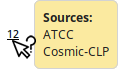
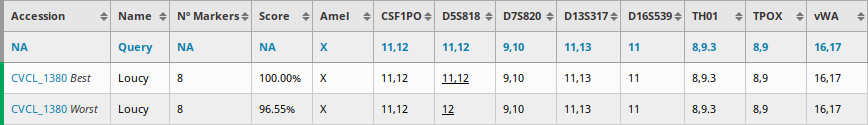

Help
Allele data is inputed in the form of values separated by commas. The values are restricted to X and Y (case insensitive) for Amelogenin and numbers for STR markers. The period . character is also allowed in order to describe variant alleles (for example 9.3). Note that allele data is whitespace insensitive.
There is no limit to the number of alleles that can be submitted for a given marker.
The order in which the alleles are entered does not matter. For example submitting 14,19.3 or 19.3,14 are equivalent.
The number of times a homozygous allele is entered does not matter. For example submitting 12 or 12,12 are equivalent. Homozygous alleles will be counted as one for the score computation.
Three algorithms are provided for the score computation:
Tanabe
Also know as Sørensen‐Dice coefficient
DOI=10.11418/jtca1981.18.4_329
PubMed=2313603
Masters (vs. query)
Default version of the Masters algorithm
PubMed=11416159
PubMed=2313603
Masters (vs. reference)
Modified version of the Masters algorithm
PubMed=11416159
PubMed=2313603
While the Tanabe algorithm is nowadays the recommended algorithm for STR profiling, the Masters algorithms remain useful when trying to figure out the identity of a contaminating cell line.
Three modes are provided for the score computation to handle cases in which allele data is missing for the query or the reference:
Non-empty markers
The score is computed on the markers that have allele data for both the query and the reference.
Query markers
The score is computed on the markers for which the user inputted allele data even if the reference is missing allele data.
References markers
The score is computed on the markers for which reference allele data is available even if the query is missing allele data.

By default, Amelogenin is only used for gender confirmation and is consequently not included in the score computation. But you can decide to include it in the scoring.
Filter defining the minimum score to be reported. Note that in the case of conflicted cell lines, the Best and Worst versions are processed as pairs and only the best score is affected by the threshold. Consequently, some Worst cases with a score below the threshold can still be present in the results.
Filter defining the maximum number of results to be reported.
Using the Load File button from the user interface, it is possible to directly import STR profile data from a table file. Both mono and multi-samples files are supported. The functionality can be used to perform a similarity search on several samples at a time or to load quickly and reliably the marker data of a sample into the user interface.
The table file can be formatted either as an Excel file (.xls or .xlsx extension) or as a comma separated file (.csv or .txt extension). By default, the tool will assume that each row (except from the header) is a distinct sample. Note that a column named "Sample Name", "Name" or "Sample" is required and each submitted sample needs to have a corresponding value. The ordering of the marker columns is not important. The name of the markers need to be indicated correctly. For Amelogenin, the program recognizes "Amel" and "AM" as valid names.
| Sample Name | Amelogenin | CSF1PO | D5S818 | D7S820 | D13S317 | D16S539 | TH01 | TPOX | vWA |
| BICR 16 | X | 12 | 13 | 10 | 11 | 12 | 6,9 | 8,11 | 17,19 |
| ND31618 | X | 12,13 | 10 | 8,10 | 11,12 | 11 | 7,9 | 8,9 | 16 |
| Lu-138 | X | 11,12 | 10,12 | 10,11 | 8,11 | 11 | 7,9 | 8,11 | 17,18 |
| NCI-H125 | X | 7 | 10 | 10 | 11 | 5,12 | 7 | 8,9 | 17 |
| GK-5 | X,Y | 10,11 | 10,12 | 10 | 12 | 11 | 9,9.3 | 8 | 16,19 |
In addition to the format standard described previously, the tool was also made compatible with the following software:
- GeneMapper ID-X
Problematic cell lines, which can be the result of either a contamination or a misidentification, have their accession number displayed in red in the result table. When hovering over them, a tooltip displays the relative Cellosaurus information concerning their problematic status.

In some cases, sources disagree on the allele values of a given marker. These cases are underlined in the result table and the corresponding sources are indicated in a tooltip when hovering over them. When a cell line possesses conflicted markers, the different combinations of alleles are computed and the Best and Worst reported as distinct rows with an additional label after their accession number.
For instance, the Loucy cell line (CVCL_1380) has a conflict for the D5S818 STR marker. DSMZ reports 11,12 while ATCC and Cosmic-CLP report 12:

As a result, the score is computed on two different STR profiles: one with 11,12 and one with 12. Based on the scoring results, the profile with 11,12 as allele value is defined as the Best profile since its a better match for the query. The second profile is consquently defined as the Worst profile:
In more complex cases, a STR marker can have more than two conflicting sources or several STR marker can be conflicted. While the number of generated profile combination is larger, the base principle remains the same. The score is computed for all generated profiles and only the Best and Worst are reported in the results.
The color indicator displayed at the left side of each row in the result table allows to easily detect the cell lines that are related. Related cell lines have a green indicator while unrelated cell lines have a red indicator. The orange indicator describes mixed results where related cell lines that have high mutation rates can be found.
The color thresholds based on the score are defined as follows:
| score >= 90 |
| 90 > score >= 80 |
| score < 80 |
| score >= 80 |
| 80 > score >= 60 |
| score < 60 |
The Nº Markers column reports the number of STR markers that were used in the score computation. It is influenced by the scoring mode selected and the inclusion of Amelogenin in the score computation. Note that a minimum of eight STR markers is recommended for accurate results.
The Cellosaurus STR Similarity Search Tool REST API allows to easily search STR profiles without having to go through the user interface. Two main modes are available: Single entry mode query to search a single sample and Batch mode query to search more than one sample at a time.
http://129.194.71.205:8080/str-sst/api/query
GET, POST
application/json
application/json text/csv
For the GET method, the parameters are added as URL variables after a terminal ? character in the URL and separated by & characters. For the POST method, the parameters are inserted in a JSON object as properties.
A more in depth description of the parameters can be found in the Parameters section. Note that all parameters both keys and values are case insensitive.
| "marker name" | Description: marker alleles separated by commas |
| Type: string | |
| algorithm | Description: scoring algorithm |
| Type: integer | |
| Choices: 1 for Tanabe, 2 for Masters (vs. query) and 3 for Masters (vs. reference) | |
| Default: 1 | |
| scoringMode | Description: scoring mode |
| Type: integer | |
| Choices: 1 for Non-empty markers, 2 for Query markers and 3 for Reference markers | |
| Default: 1 | |
| includeAmelogenin | Description: inclusion of Amelogenin in the score computation |
| Type: boolean | |
| Default: false | |
| scoreFilter | Description: minimum score |
| Type: integer | |
| Default: 60 | |
| maxResults | Description: maximum number of results |
| Type: integer | |
| Default: 200 | |
| description | Description: optional tag describing the query |
| Type: string | |
| outputFormat | Description: format of the API output |
| Type: string | |
| Choices: json or csv | |
| Default: json |
200
{
"Amelogenin": "X",
"CSF1PO": "13,14",
"D5S818": "13",
"D7S820": "8",
"D13S317": "12",
"FGA": "24",
"TH01": "8",
"TPOX": "11",
"vWA": "16",
"algorithm": 1,
"scoringMode": 1,
"scoreFilter": 70,
"includeAmelogenin": false
}
http://129.194.71.205:8080/str-sst/api/batch
POST
application/json
application/json application/zip
The parameters of each sample to be searched are inserted in a JSON Array as distinct elements, as seen in the Example. When the csv output format is selected, the produced csv files are compressed together in a zip file.
A more in depth description of the parameters can be found in the Parameters section. Note that all parameters, both keys and values, are case insensitive.
| "marker name" | Description: marker alleles separated by commas |
| Type: string | |
| algorithm | Description: scoring algorithm |
| Type: integer | |
| Choices: 1 for Tanabe, 2 for Masters (vs. query) and 3 for Masters (vs. reference) | |
| Default: 1 | |
| scoringMode | Description: scoring mode |
| Type: integer | |
| Choices: 1 for Non-empty markers, 2 for Query markers and 3 for Reference markers | |
| Default: 1 | |
| includeAmelogenin | Description: inclusion of Amelogenin in the score computation |
| Type: boolean | |
| Default: false | |
| scoreFilter | Description: minimum score |
| Type: integer | |
| Default: 60 | |
| maxResults | Description: maximum number of results |
| Type: integer | |
| Default: 200 | |
| description | Description: optional tag describing the query |
| Type: string | |
| outputFormat | Description: format of the API output |
| Type: string | |
| Choices: json or csv | |
| Default: json |
200
[{
"description": "Example 1",
"Amelogenin": "X",
"CSF1PO": "13,14",
"D5S818": "13",
"D7S820": "8",
"D13S317": "12",
"FGA": "24",
"TH01": "8",
"TPOX": "11",
"vWA": "16",
"algorithm": 2,
"scoringMode": 1,
"scoreFilter": 70,
"includeAmelogenin": true
},{
"description": "Example 2",
"Amelogenin": "X, Y",
"CSF1PO": "13",
"D5S818": "13, 14",
"D7S820": "8, 19",
"D13S317": "11, 12",
"FGA": "24",
"TH01": "8",
"TPOX": "11",
"vWA": "15",
"algorithm": 2,
"scoringMode": 1,
"scoreFilter": 70,
"includeAmelogenin": true
}]